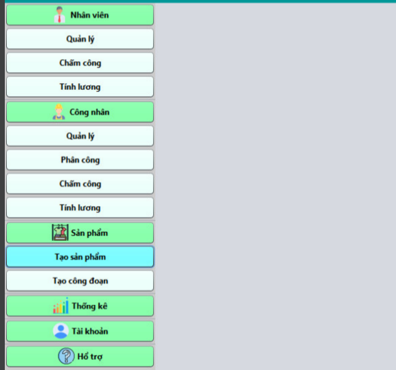
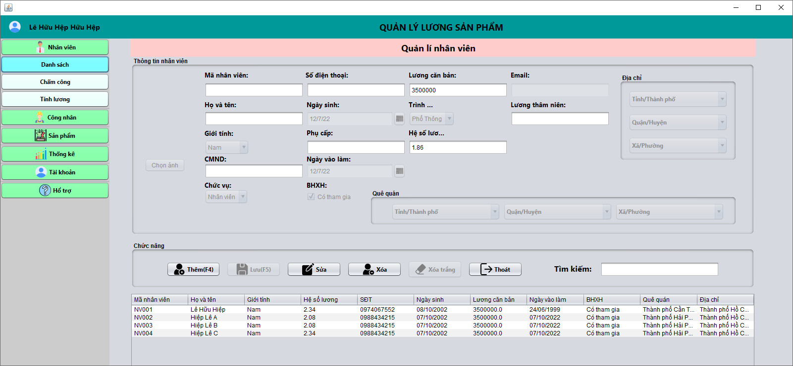
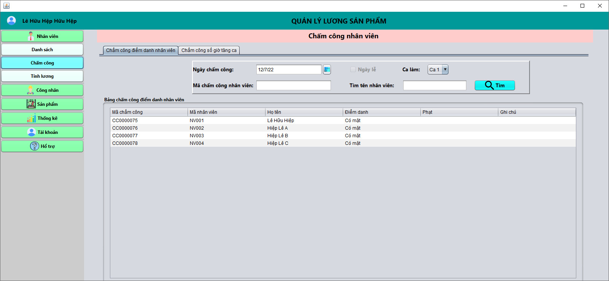
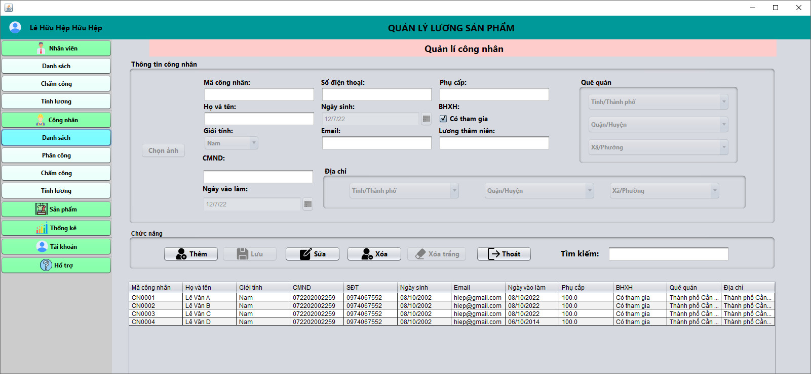
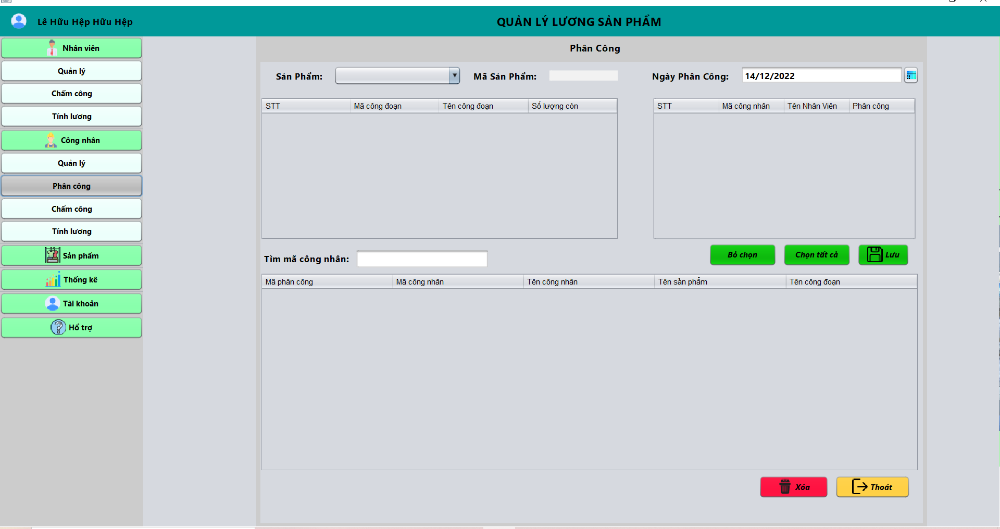
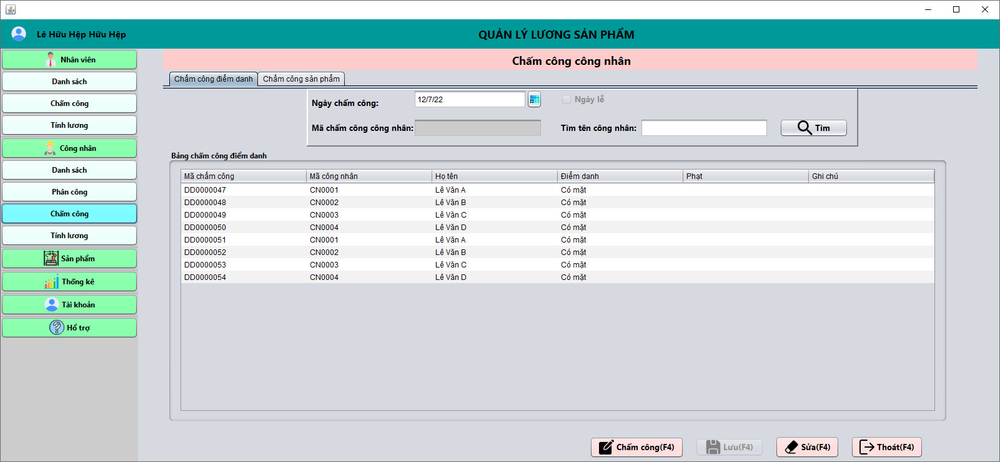
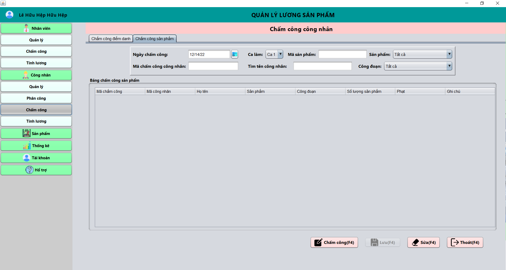
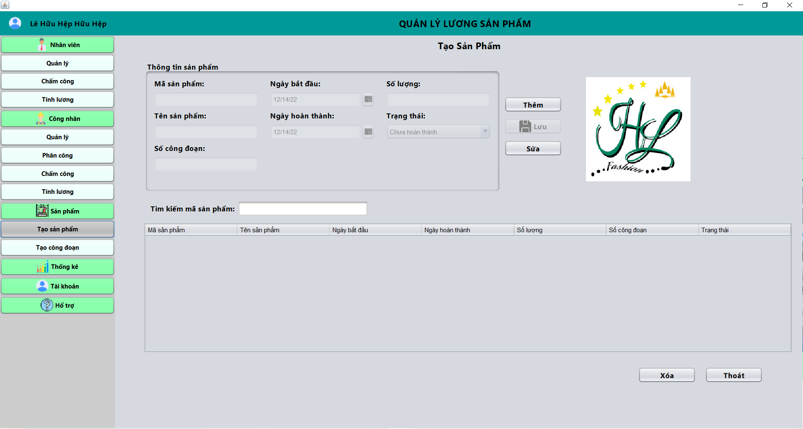
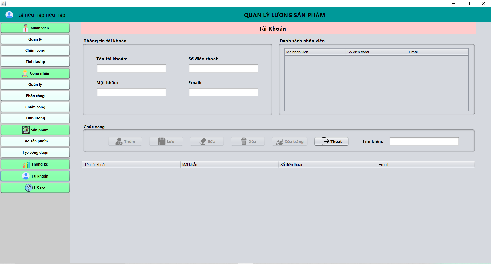

Menu chính
-
Quản lý nhân viên:
- Quản lý thông tin.
- Chấm công.
- Tính lương nhân viên.
- Quản lý công nhân:
- Quản lý thông tin.
- Phân công.
- Chấm công.
- Tính lương.
- Quản lý sản phẩm:
- Tạo sản phẩm.
- Tạo công đoạn.
- Thống kê.
- Quản lý tài khoản.
- Hỗ trợ người dùng.
Chương trình có các chức năng
Quản lý thông tin nhân viên
- Mã nhân viên: phát sinh tự động.
- Họ và tên: nhập từ bàn phím.
- Giới tính: chọn nam hoặc nữ.
- Chức vụ: chọn nhân viên hoặc quản lý.
- Số điện thoại: nhập từ bàn phím.
- Ngày sinh: chọn ngày.
- Phụ cấp: nhập từ bàn phím.
- BHXH: chọn có hoặc không.
- LƯơng cơ bản : phát sinh tự động phụ thuộc vào chức vụ và trình độ.
- Trình độ: chọn gồm: Phổ thông, Cao đẳng, Đại học.
- Hệ số lương phụ thuộc vào trình độ.
- Email: nhập từ bàn phím.
- Địa chỉa và quê quán: chọn cụ thể.
Các thông tin của nhân viên bao gồm:
- Thêm: thêm một nhân viên vào danh sách.
- Lưu: lưu lại thay đổi sau khi “Sửa”.
- Xóa: loại bỏ một nhân viên được chọn ra khỏi dánh sách.
- Xóa trắng: xóa các trường đã nhập(chọn) phía trên.
- Thoát: thoát khỏi chương trình.
- Tìm kiếm: nhập thông tin và tìm theo dữ liệu đã nhập.
Các chức năng bao gồm:
Chấm công nhân viên
- Bước 1: chọn ngày (mặc định là ngày hiện tại) và chọn ca.
- Bước 2: hiển thị danh sách nhân viên.
- Bước 3: chọn “có mặt”, “vắng có phép” hoặc vắng khống phép” cho từng nhân viên(mặc định là có mặt).
- Bước 4: nhấn lưu.
Chấm điểm danh:
- Bước 1: chọn ngày (mặc định là ngày hiện tại) và chọn ca.
- Bước 2: hiển thị danh sách nhân viên.
- Bước 3: nhập số giờ tăng ca cho từng nhân viên.
- Bước 4: nhấn lưu.
Chấm tăng ca:
Quản lý thông tin công nhân
- Mã công nhân: phát sinh tự động.
- Họ và tên: nhập từ bàn phím.
- Giới tính: chọn nam hoặc nữ.
- CMND: nhập từ bàn phím.
- Ngày vào làm: chọn ngày cụ thể.
- Số điện thoại: nhập từ bàn phím.
- Ngày sinh: chọn ngày cụ thể.
- Email: nhập từ bàn phím.
- Phụ cấp: nhập từ bàn phím.
- BHXH: chọn có hoặc không.
- Địa chỉ và quê quán chọn cụ thể.
Các thông tin công nhân bao gồm
- Thêm: thêm công nhân mới vào danh sách.
- Lưu: lưu các thay đổi sau khi “Sửa”.
- Xóa: loại bỏ một nhân viên đã chọn ra khỏi danh sách.
- Xóa trắng: xóa bỏ các thông tin đã nhập phía trên.
- Thoát: thoát khỏi chương trình.
- Tìm kiêm: nhập thông tin và tìm kiếm theo dữ liệu đã nhập.
Các chức năng quản lý thông tin công nhân:
Phân công công nhân
- Bước 1: chọn ngày(mặc định là ngày hiện tại).
- Bước 2: chọn sản phẩm.
- Bước 3: hiển thị các công đoạn còn lại.
- Bước 4: chọn công đoạn cần phân công.
- Bước 5: chọn công nhân muốn phân công.
- Bước 6: nhấn lưu.
Điều kiện: có danh sách công nhân, sản phẩm và công đoạn.
Chấm công công nhân
- Bước 1: chọn ngày(mặc định là ngày hiện tại).
- Bước 2: chọn ngày lễ hoặc không.
- Bước 3: hiện danh sách công nhân.
- Bước 4: chọn “có mặt”, “vắng có phép” hoặc “vắng không phép”.
- Bước 5: chọn lưu. Ngoài ra có thể sửa nếu có sai sót trong quá trình chấm công.
Điều kiện: có danh sách công nhân đã được phân công.
Chấm công sản phẩm
- Bước 1: chọn chấm công.
- Bước 2: chọn ngày(mặc định là ngày hiện tại) và chọn ca.
- Bước 3: chọn sản phẩm hay công đoạn muốn chấm công.
- Bước 4: hiển thị danh sách công nhân và công đoạn được phân công.
- Bước 5: nhập số lượng đã hoàn thành.
- Bước 6: nhấn lưu. Ngoài ra có thể sửa nếu có sai sót trong khâu chấm công. Cuối cùng nhấn thoát nếu đã làm xong công việc.
Tạo sản phẩm
- Mã sản phẩm: được phát sinh tự động.
- Tên sản phẩm: nhập từ bàn phím.
- Số công đoạn: nhập từ bản phím.
- Ngày bắt đầu: chọn ngày cụ thể.
- Ngày hoàn thành: chọn ngày cụ thể.
- Số lượng: nhập từ bản phím.
- Trạng thái: hoàn thành hoặc chưa.
Thông tin sản phẩm bao gồm:
- Thêm: thêm sản phẩm vào danh sách:
- Lưu: lưu lại các thay đổi sau khi “Sửa”.
- Sửa: thay đổi thông tin nếu có sai sót.
- Xóa: loại bỏ sản phẩm được chọn ra khỏi danh sách.
- Thoát: đóng chương trình.
Các chức năng:
Tạo công đoạn

Điều kiện: có sản phẩm trước đó.
- Mã công đoạn: phát sinh tự động.
- Tên công đoạn: nhập từ bàn phím.
- Số thứ tự: chọn cụ thể.
- Giá: nhập từ bàn phím.
Thông tin công đoạn bao gồm:
- Thêm: thêm một công đoạn cho một sản phẩm cụ thể.
- Lưu: lưu lại các thay đổi của chức năng “Sửa”.
- Sửa: thay đổi thông tin công đoạn nếu có sai sót.
- Xóa: xóa công đoạn được chọn ra khỏi danh sách.
- Thoát: đóng chương trình.
Các chức năng:
Quản lý tài khoản
- Tên tài khoản: mã nhân viên.
- Mật khẩu: nhập từ bàn phím.
- Số điện thoại: phụ thuộc vào mã nhân viên.
- Email: phụ thuộc vào mã nhân viên.
Thông tin tài khoản bao gồm:
- Thêm: cung cấp tài khoản cho nhân viên.
- Lưu: lưu lại các thay đổi của chức năng “Sửa”.
- Sửa: thay đổi các thông tin tài khoản nếu muốn.
- Xóa: rút lại tài khoản đã cấp.
- Thoát: đóng chức năng.